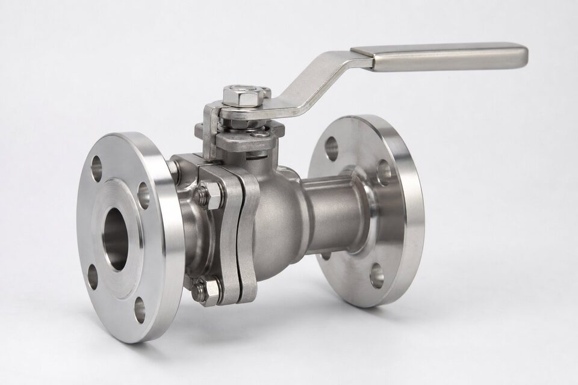

چرا شیر استنلس؟
فولاد کربنی در برابر بسیاری از سیالهای صنعتی خورده میشود و در صنایع بهداشتی نیز قابل پذیرش نیست. استنلس استیل با لایه غیرفعال کروم، مقاومت خوردگی ذاتی دارد و در طیف وسیعی از گریدها، از خطوط آب و هوای فشرده تا اسیدها و سیالهای دارویی به کار میرود. انتخاب شیر استنلس اما فقط گفتن «استیل» نیست؛ گرید، نوع ساخت (ریختگی یا فورج) و پرداخت سطوح، همگی باید متناسب سیال و الزامات سرویس انتخاب شوند تا عمر شیر و ایمنی خط تضمین گردد.

گریدهای رایج: 304 در برابر 316
دو خانواده اصلی در شیرآلات، 304 و 316 هستند. گرید 304 با کروم و نیکل، مقاومت خوبی در شرایط عمومی دارد و اقتصادیترین انتخاب است. گرید 316 با افزودن حدود دو درصد مولیبدن، در برابر خوردگی حفرهای و شیاری ناشی از کلرایدها و بسیاری از محیطهای شیمیایی مقاومتر است. قاعده سرانگشتی صنعت این است: اگر کلراید، اسید یا شرایط دریایی در میان است، 316 انتخاب شود؛ برای آب، بخار و هوای فشرده، 304 معمولاً کافی است. در سرویسهای خاصتر، گریدهای کمکربن مانند 316 ال یا آلیاژهای دوطرفه بررسی میشوند.
کدهای ریختگی (CF8) و (CF8M)
بدنه شیرهای استنلس اغلب ریختگی است و کدهای متفاوتی دارد: (CF8) معادل ریختگی گرید 304 و (CF8M) معادل ریختگی گرید 316 است. این کدها در گواهی مواد و مارک بدنه دیده میشوند و نباید با کدهای فورج اشتباه گرفته شوند. در سفارش، ذکر «بدنه (CF8M)» یا «بدنه (CF8)» دقیقتر از گفتن استیل 316 یا 304 است، چون روش ساخت را هم مشخص میکند. قطعات تریم نیز معمولاً از گریدهای فورج متناسب ساخته میشوند و در مدارک ذکر میگردند.
کاربردهای اصلی
- صنایع شیمیایی و پتروشیمی: خطوط خورنده با اسیدها و حلالها.
- صنایع غذایی و دارویی: خطوط بهداشتی با پرداخت مخصوص.
- تصفیه آب و فاضلاب: محیطهای حاوی کلراید و مواد شیمیایی.
- صنایع دریایی و سکوهای ساحلی: هوای شور و اسپری نمک.
- خطوط بخار تمیز و هوای فشرده در صنایع حساس.
معیارهای انتخاب و نکات خرید
برای انتخاب درست، چهار پرسش مطرح است: سیال دقیقاً چیست و چه ناخالصیهایی دارد؟ دما و فشار کاری چقدر است؟ الزامات بهداشتی یا پوششدهی وجود دارد؟ و معیار نشتی مورد انتظار کدام است؟ پاسخها گرید، طرح و نشیمنگاه را تعیین میکنند. در استعلام، گرید را صریح ذکر کنید و گواهی مواد را در مدارک تحویل بخواهید؛ چون تفاوت قیمت 304 و 316 باعث میشود بدون ذکر گرید، پیشنهادهای نامتجانس دریافت کنید. در صنایع بهداشتی، نوع پرداخت سطح و استانداردهای اتصال نیز باید در سفارش قید شود.
خوردگی فولاد زنگنزن و باورهای نادرست
یکی از خطرناکترین باورهای رایج در صنعت این است که فولاد زنگنزن در همه شرایط زنگ نمیزند؛ واقعیت این است که این خانواده نیز در شرایط مشخصی دچار خوردگی میشود و شناخت این شرایط، کلید انتخاب درست است. شایعترین پدیده، خوردگی حفرهای در حضور یون کلرید است؛ آبهای شور، برخی مواد شیمیایی و حتی محیطهای ساحلی میتوانند در گریدهای معمولی حفرههای ریز و پیشرونده ایجاد کنند که از بیرون کماهمیت به نظر میرسند اما به سرعت عمیق میشوند. پدیده دوم، خوردگی بیندانهای در اثر ماندن طولانی در بازه دمایی حساس هنگام جوشکاری یا عملیات حرارتی نادرست است که مرز دانهها را تضعیف میکند. سوم، خوردگی تنشی است که ترکیبی از تنش کششی و محیط خورنده، ترکهای ناگهانی ایجاد میکند. برای جلوگیری از این مشکلات، انتخاب گرید باید بر اساس تحلیل محیط واقعی انجام شود، نه صرفا بر اساس عرف بازار؛ در محیطهای کلریدی، گریدهای حاوی مولیبدن یا آلیاژهای بالاتر لازماند. نکته اجرایی مهم دیگر، جلوگیری از آلودگی سطح استنلس با ذرات آهنی است؛ تماس با ابزارهای فولاد کربنی یا پلیسههای آهنی میتواند لکههای زنگ سطحی ایجاد کند که معمولا با اسیدشویی قابل رفعاند اما نشانه نیاز به دقت بیشتر در ساخت و نصباند.
پس از هر عملیات جوشکاری یا سنگزنی روی سطوح استنلس، تمیزکاری و در صورت نیاز منفعلسازی سطح را انجام دهید؛ لایه محافظ طبیعی استنلس پس از این عملیات نیازمند زمان و شرایط مناسب برای بازسازی کامل است.
جمعبندی
شیر استنلس انتخاب طبیعی سرویسهای خورنده و بهداشتی است، اما «استیل» به تنهایی مشخصه نیست: گرید، کد ریختگی و پرداخت سطوح باید متناسب سیال انتخاب و در استعلام صریح شوند. با این دقت، هم از خرید گرید پایینتر از نیاز جلوگیری میشود و هم از پرداخت هزینه اضافی برای گرید بالاتر از آنچه سرویس لازم دارد.
سوالات رایج
تفاوت 304 و 316 در شیر چیست؟
گرید 316 با افزودن مولیبدن، مقاومت بهتری در برابر خوردگیهای کلرایدی و شیمیایی دارد و برای سرویسهای سختتر انتخاب میشود؛ 304 برای شرایط عمومیتر کافی و اقتصادیتر است.
(CF8) و (CF8M) چه هستند؟
معادلهای ریختگی همان گریدها هستند؛ (CF8) معادل ریختگی 304 و (CF8M) معادل ریختگی 316. بدنههای ریختگی با این کدها و قطعات فورج یا تریم با کدهای استاندارد خود مشخص میشوند.
چرا استنلس در صنایع بهداشتی الزامی است؟
سطح صاف و غیرمتخلخل، تمیزکاری و استریل آسان و عدم واکنش با محصول؛ به همین دلیل در صنایع غذایی و دارویی، مسیر سیال باید استنلس با پرداخت مناسب باشد.
آیا استنلس در همه سیالهای خورنده مناسب است؟
خیر؛ در برابر برخی اسیدها و به ویژه کلرایدها در دمای بالا، گریدهای خاص یا آلیاژهای نیکلدار لازم است. انتخاب باید با بررسی سازگاری سیال انجام شود.
مطالب مرتبط
با ذکر گرید، سایز، کلاس و سرویس، شیر استنلس با گواهی مواد به همراه مدارک تست عرضه میشود.
مشاهده صفحه محصول ← ثبت RFQ همین محصولتامین این تجهیزات را به پیشرو تجهیز فرتاک بسپارید
شرکت پیشرو تجهیز فرتاک تامینکننده تخصصی تجهیزات صنعتی برای پروژههای نفت، گاز، پتروشیمی، فولاد و نیروگاهی است. برای دریافت پیشنهاد فنی و قیمت، استعلام (RFQ) خود را ثبت کنید تا کارشناسان مهندسی فروش در کوتاهترین زمان پاسخ دهند.
- تامین شیرآلات صنعتیخانواده کامل شیر با گواهی مواد و تست
- تامین تجهیزات صنایع نفت و گازپکیج مواد مطابق وندورلیست